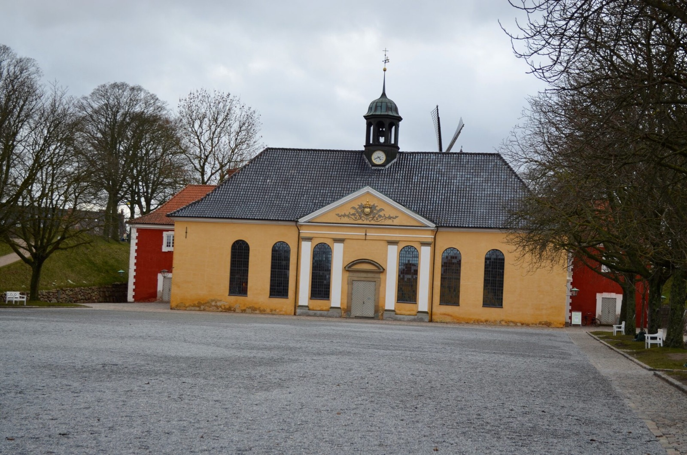

Denmark
Copenhagen
Historic streets, warm evening light, elegant architecture, and quiet city moments through my lens.
View PhotosAbout Copenhagen
Copenhagen combines Nordic calm, colorful streets, modern design, historic architecture, and a relaxed atmosphere by the water.
Copenhagen Gallery
A selection of photographs from Copenhagen — streets, architecture, light, and moments that defined the journey.

Kastelet in Copenhagen

Kastelet in Copenhagen

Windmill in kastelet

Frederikskirke

Skuespillhuset (Royal Playhouse)

Nyhavn

Kanalhuset (Canal house)

Kings Palace guards

Kongens Nytovn (Kings square)

The Royal theatre of Copenhagen

Rosenberg castle

Rosenberg Castle

Nikolaj Kunsthall

Royal Danish library

St Alban's church

St Alban's church

Kastelkirken

Kommandatboligen (Commander's House)
Travel Note
Walking Through Copenhagen
Copenhagen felt elegant and calm at the same time. Walking through its streets, I was drawn to the warm colors, the historic buildings, and the atmosphere that made even ordinary moments feel cinematic.